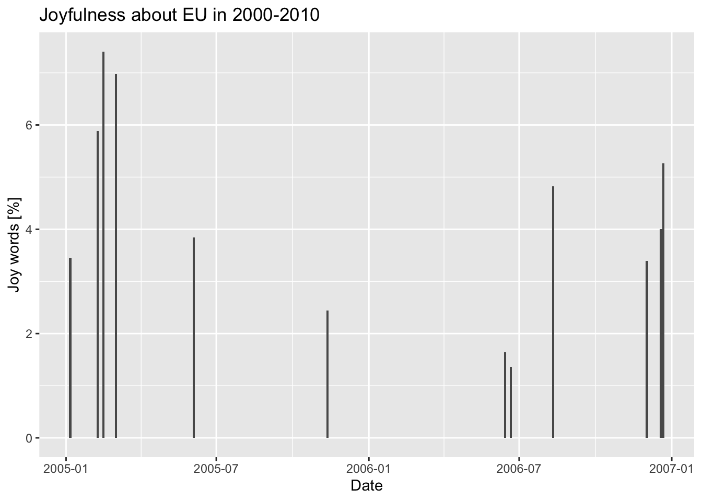

In this session we will see how to perform basic text mining with R. As the word itself suggests, text mining refers to the process of extracting information and insights from text. Text mining can be extremely useful when looking for any sort of pattern, trend, or relantionships in large volumes of text data (articles, documents, emails, social media posts, etc).
Text mining, or text analysis, can be a very challenging task as text data is often unstructured, i.e. it does not have a predefined format or structure. Furthermore, text is written in natural language and contains all the ambiguity of human subjects. Considering that everything ever written is text, the volume of data available for mining is huge and very “noisy”, as text may contain irrelevant information, typos, etc. For these reasons, text mining requires quite sophisticated techniques to be perfomed.
Thanks for us, most of these techniques have already been implemented into ready-to-use packages in different programming languanges (including R) and in this session we will go through the basic steps of a general text mining process: data collection, preprocessing, feature extraction, text classification, and visualization.
Reading data
For this session we already collected data using the web application I-analyzer. In particular we looked for “european union” over the news of the Times Digital Archive between 1945 and 2012. The data are stored in a csv file and we are going to read it into an R dataframe
read_delim is a function to read coma separated files (csv) and more into R DataFrames. In this case we obtained all the necessary arguments clicking on “Import Dataset” in R studio. In particular, we gave instructions to convert the date of publication column (“date-pub”) data format (<month_str> <day>, <year>) into an R object.
We know have all the data we need in a single R DataFrame. The information we are interested in is the “content” column. Let’s see how to extract this information.
Preprocessing
Tokenization
As we mentioned in the introduction, text data in unstructured data and it is up to us to define a data structure suitable for the kind of text analysis we want to perform. We want our data structure to be comprehensive and such that can be easely manipulated according to our needs.
The process of dividing a string of text into meaningful units is called Tokenization and these meaningful units are called tokens. A token can be a word, a phrase, a paragraphs, or a single character depending on the nature of our analysis. If, for example, we want just to exaplore how many times the name of a certain politician is mentioned in a speach, our tokens would probably be all the words of the speach and our analysis would consist on counting how many tokens are equal to the name of the politician.
To perform good text mining, not only we want to optimally tokenize our text, but also organize our tokes in a tidy way, quite litterally! For the R community, “tidy” has a very specific meaning, i.e. structuring data sets to make them consistent, easy to work, and easy to analyse. In our context it means having a single token per data frame row. R allows us to perform all these operations in few lines thanks to the library tidytext
In the line above we use the function unnest_tokens to tokenize the content of our DataFrame. First of all, we “feed” our DataFrame to the function using the workflow syntax data_df %>% unnest_tokens(...). This is equivalent to put the DataFrame as a first argument of the function, i.e. unnest_tokens(data_df, work,content). The workflow syntax is easier to interpret when data is manipulated and then fed again into another function. over and over again, so from now on we will always use this syntax when possible. The other two arguments of the function are an output and an input column. Specifying word as output column we tell the function to tokenise text by word and to return the previous DataFrame with an additional column: word, indeed. The argument content points the function at the column that needs to be tokenised, in thi case content.
A quick view of the DataFrame tidy_content shows us that the content column is gone, while a column named word is now attached at the end of the DataFrame. If you need to know which word belongs to which content AFTER tokenization, remember to double check that the content in your initial DataFrame has a unique identifier associated with it (in our case, the column issue).
Cleaning data
As we mentioned before, text is unstructured data that can be very “noisy”, i.e. containing a lot of not relevant information. Actually, the most common words in a text are words that have very little meaning, such as “the”, “and”, “a”, etc. These words are referred as stop words and cleaning data from text mining includes removing stop words from our tokenised data:
stop_words is a dataframe containing all the stop words. Using anti_join we select those rows (so words) in tidy_content that do NOT correspond to the stop words. In other words, with the few lines above, we cleaned up the tidy_content DataFrame from stop words.
Text Analysis
Counting words
After having tokenised and cleaned our data, it’s time to perform the most basic text mining operation: count the times a certain word appears in our text. Even if conceptually it seems a quite trivial operation, by counting the frequency of each word in a text we can gain important insights about the general characteristics of the text. Furthermore, counting the frequency of specific words we can classify a text or define a model to identify the underlying topics or themes.
In this case we “inject” our data as input of the function count that, indeed, counts the identical entries of the column word sorting the result from high to low counts. In our analysis we want to focus on the most frequent words, let’s say the ones that appear more than 2000 times. To do that, we just need to feed our data to the function filter() specifying our count lower limit. After filtering we need to reorder our data to show the most frequent words first, we do that using mutate() and reorder(). The last does indeed reorder the column word according to the values of the column n (word frequency). Finally, we use the function ggplot to plot the data using a column geometry.
Looking at the data, we are not surprised that the second most frequent word is “Europe” as we are analysing data extracted from quering “European Union”. It is significant that the third mentioned word is “vote”. This may mean that all the times European Union was mentioned in the news, it was most of the time related to decision making or elections within it.
Word classification and Sentiment Analysis
Can we write software to evaluate if a sentence is sad or if the general mood of a story is positive or negative? We actually can and this may seem surprising as the mood of the sentiment related to a text seems some very subjective and highly affected by human ambiguity. According to wikipedia, sentiment analysis (also known as opinion mining or emotion AI) is the use of natural language processing, text analysis, computational linguistics, and biometrics to systematically identify, extract, quantify, and study affective states and subjective information. Sentiment analysis can be very complex, so complex that should deserve a dedicated course itself. In this session we will perform a very basic sentiment analysis so that you can grasp its main principles and workflow.
Sentiment analysis is based on the assumption that we can view a text as a combination of individual words and that, having assigned a sentiment to each individual word, the resulting sentiment of a test will the sum of the sentiments of its individual words. In other words, if most of the words in a text are positive, then the text can be classified as positive. Given this assumptions, to perform sentiment analisys, we need a database of words where a sentiment has been assigned to a word following specific conventions. What we need is a lexicon, a dataframe assigning a score to each word or phrase, indicating whether it is associated with positive or negative sentiment. For example, the word “happy” may have a positive score, while the word “sad” may have a negative score.
For our simple example, we already downloaded the NRC emotion lexicon. The NRC Emotion Lexicon is a list of English words and their associations with eight basic emotions (anger, fear, anticipation, trust, surprise, sadness, joy, and disgust) and two sentiments (negative and positive). If an emotion is associated with a word, its score will be 1, 0 otherwise.
In the previous lines we read the lexicon into an R DataFrame and we extracted from it only the words associated with joy. Once we know which are the words associated with joy, we can count home many “joy words” there are in our entries and see if the news associated with “European Union” can be classified as joyful or not.
The starting point is always our cleaned data tidy_clean_content. We first apply a filter to select news in the decade 2000-2010, then we group our data according to the issue (remember, our data has been tokenized, so at the moment each row corresponds to a single word, not to a single news) and we count the number of words per issue. We repeat the same operation a second time, but now we join our dataframe with joy_words, in this way we filter out only those words that, according to the NRC lexicon, are associated with joy. We finally merge the two resulting DataFrames for plotting convenience.
issue_tot_df %>%mutate(per_cent_joy=joy_words_per_issue/words_per_issue*100) %>%ggplot(aes(x = date, y = per_cent_joy) )+geom_col() +labs(x ="Date", y ="Joy words [%]", title ="Joyfulness about EU in 2000-2010")

Inspecting the plot we can see that the percent of joy words never exceed the 8%. That is a quite small percent, what can we deduce from that? Text mining is a powerful technique, but like any other kind of statistics needs to be properly read according to the context. First of all we do not exactly know if 8% is the average rate of joyness associated with European Union news. We don’t even know if the Times, by default, reports EU related news with a certain level of “coldness”. Once established these level of “backgroud” or “bias” we can look at the plot to see eventual trends or correlations with other significant events in time.
Analyzing word and document frequency: tf-idf
In the previous sessions we have seen how to compute and display the number of times a term appears in a text versus the total number of words in that text. This quantity is also known as term frequency (tf) and it may be considered an indicator of the importance of a term in a text. Can it? Our goal is trying to find a way (or several ways) to extract the topic (or the sentiment) of a text, but does the most frequent term in that text correspond to what the text is about? Well, in most of the cases no for two main reasons: 1) the most frequent terms are usually meaningless (e.g. stop words) and 2) the fact that a term is not used often, it does not necesseraly mean that it is not important or rapresentative for the entire text. In the previous session we tried to deal with the first point filtering out the stop words from our text, in this session we will see how to take into account those terms that are not that frequent in a text but that can still be important to deduce its general meaning/topic/sentiment.
We introduce a quantity called inverse document frequency:
\[ idf(term) = log \Bigg( {n_{documents} \over n_{documents \space containing \space term}} \Bigg) \] How you can see from the equation, idf is a function of the term we want to focus on, this means that we can assign a unique idf to every single term in our text. idf is a logarithmic quantity, this means that it can be positive or negative depending on the ratio between the number of documents and the number of documents containing the term we want to focus on. Another consequence of the idf definition is that it is quantity that really make sense to consider only when we are exploring several documents or texts.
Let’s see how idf work. If our selected term is present in all the documents of our sample, then the argument of the logarithm is 1 and idf will be 0. If our selected term is present in less documents than the total number of documents in our sample, then idf will be positive. The less present our term is, the larger idf will be (remember we are dealing with inverse document frequency). Can idf be negative? Not really, because that wold require our term being present in a number of document larger than the total number of documents in our sample, and that is impossible.
Now that we are familiar with idf how to use it? Our goal is still to measure how important a word is to a document in a collection (or corpus) of documents. In the previous sessions we saw how document frequency (df) alone is a misleading indicator of the importance of a word as most frequent words are often meaningless. This time we will combine tf and idf into a single quantity called tf-idf. Multiplying the two quantitis, idf will work as a weight for the document frequenty alone, adjusting its magnitude according to the frequency of the term in the entire corpus. It is important to keep in mind that the tf-idf statistics is a heuristic process, i.e. it is a method that has been proved to be useful in text mining simply “by trying” and that it has not specific theoretical motivations behind it.
Warning: A value for tf_idf is negative:
Input should have exactly one row per document-term combination.
issue_tf_idf
# A tibble: 575,568 × 6
issue word n tf idf tf_idf
<chr> <chr> <int> <dbl> <dbl> <dbl>
1 68302 the 8 0.170 -0.000767 -0.000130
2 52204 the 31 0.150 -0.000767 -0.000115
3 53256 the 28 0.146 -0.000767 -0.000112
4 53191 the 58 0.146 -0.000767 -0.000112
5 53078 the 27 0.141 -0.000767 -0.000108
6 57761 the 18 0.132 -0.000767 -0.000101
7 53284 the 58 0.130 -0.000767 -0.0000999
8 53077 the 26 0.13 -0.000767 -0.0000997
9 61094 the 49 0.130 -0.000767 -0.0000996
10 53175 the 76 0.130 -0.000767 -0.0000994
# … with 575,558 more rows
Relationships Between Words
If we look at what we did so far to extract meaningful information from text, our methods look a quite over-simplification compared to the complexity of the human language: we basically counted single words meausuring their frequency over different samples (single text or entire corpus) and assigned them arbitrary tags to quantify which emotion they were more representative for.
Counting single words is a well proven text mining techniques, but even more interesting is studying the relation between two or more words, i.e. which words tend to follow others immediately or tend to co-occur withing the same documents.
In this session we will explore tidytext methods that focus on analysing and visualising the relationships between words.
 Let’s see how idf work. If our selected term is present in all the documents of our sample, then the argument of the logarithm is 1 and idf will be 0. If our selected term is present in less documents than the total number of documents in our sample, then idf will be positive. The less present our term is, the larger idf will be (remember we are dealing with inverse document frequency). Can idf be negative? Not really, because that wold require our term being present in a number of document larger than the total number of documents in our sample, and that is impossible.
Let’s see how idf work. If our selected term is present in all the documents of our sample, then the argument of the logarithm is 1 and idf will be 0. If our selected term is present in less documents than the total number of documents in our sample, then idf will be positive. The less present our term is, the larger idf will be (remember we are dealing with inverse document frequency). Can idf be negative? Not really, because that wold require our term being present in a number of document larger than the total number of documents in our sample, and that is impossible.